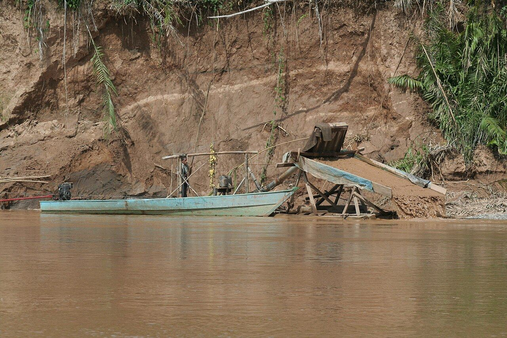

Guyana's diggers choose gold: diamond exports fall 70 to 80 percent
The same dredges that wash diamonds wash gold — and with bullion having doubled in three years while small-parcel rough fell by half, Guyana's alluvial miners have switched. First-half diamond exports collapsed 70 to 80 percent year on year.

§1The contraction arrives by an older mechanism: the diggers walk.
The supply discipline this page has tracked all summer — Severalmaz suspended, Kao mothballed, Finsch in rescue, Venetia switched off for two years — has mostly been a story of boardrooms choosing to withhold carats.
IDEX's reporting from Guyana describes the same contraction arriving by an older mechanism: the diggers themselves walking away. The country's diamond exports fell 70 to 80 percent year on year in the first half of 2026, a collapse one exporter, Ronnie Grouper, called drastic — Guyana, he said, has never experienced such a decrease.
§2The economics require no committee.
The economics require no committee. Alluvial diamond and gold deposits sit side by side in Guyana's interior, and the equipment — dredges, sluices, the same crews — works either gravel. Gold has roughly doubled in three years and closed Tuesday at $4,072; prices for the small rough parcels that are Guyana's stock in trade have fallen by more than half over the same period. A miner choosing between the two is not making a bet on geology; he is reading two price boards nailed to the same tree.
§3A marginal supplier leaves just as demand for its goods firms.
Guyana's production profile explains why it moved first. Some 85 percent of the country's rough value sits in stones of half a carat and smaller — a typical thousand-carat parcel contains just six to ten stones above two carats. That is precisely the small-goods category that spent two years in the deepest hole, and although the RapNet 0.30-carat index has now risen for consecutive months, the recovery arrived after the workforce had already re-rigged for gold.
The wider point is structural. Corporate mines can be restarted with a capital allocation; artisanal and small-scale supply, once dispersed into another commodity, returns slowly if at all — the crews re-tool, the buyers' networks atrophy, the licenses lapse. Angola and the DRC watch the same gold price Guyana does. The rough market's recovering small-stone segment is, quietly, losing a marginal supplier at exactly the moment demand for its goods firmed.
A miner choosing between the two is not making a bet on geology; he is reading two price boards nailed to the same tree.
Every bullish argument for natural rough this year has been an argument about subtraction, and this is subtraction with a long memory. When the cycle turns and buyers come looking for the small goods Guyana used to wash, the dredges will be a season deep in gold gravel and disinclined to move.
Supply lost to price comes back; supply lost to a rival commodity at record levels is closer to permanent. The 0.30-carat index just found one more reason to keep climbing.
The trade, filed to your inbox before the New York open.
Prices, tenders and the one story that moved the industry overnight — read in ninety seconds.
Subscribe free →